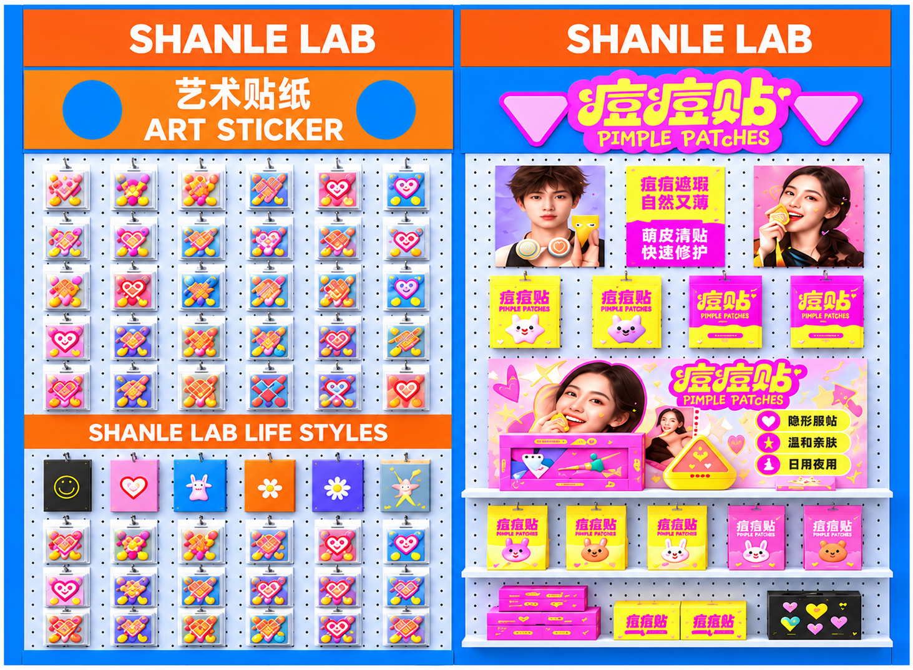
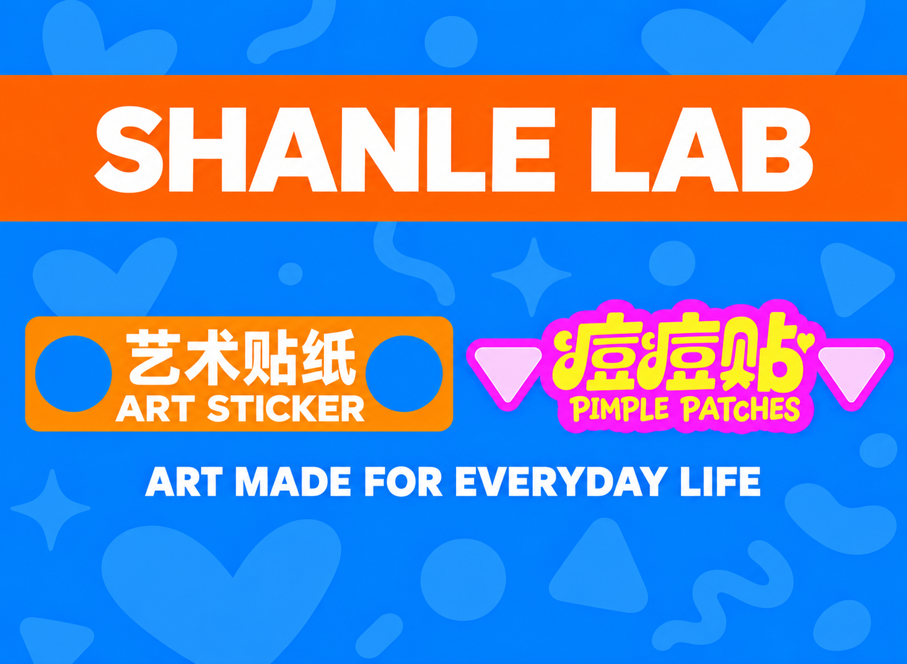
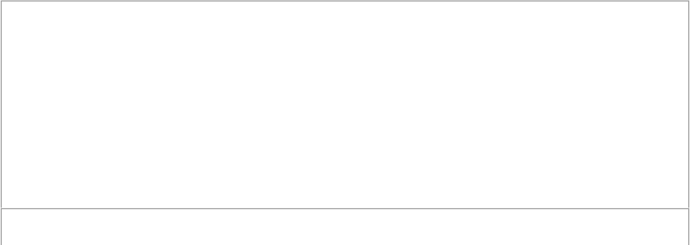

A01 · 后墙内侧正视
生成式正视参考-人工重建
参考画板 3000 × 2200 mm · 下载PNG
A02 · 右墙内侧正视
生成式正视参考-人工重建

参考画板 3000 × 2200 mm · 下载PNG
A03 · 后墙外侧
已补POP STICKER品牌背面-人工重建参考
参考画板 3000 × 2200 mm · 下载PNG
A04 · 右墙外侧
已补ART与PIMPLE品牌背面-人工重建参考

参考画板 3000 × 2200 mm · 下载PNG
B01 · 中岛正面
生成式正视参考-人工重建
参考画板 800 × 800 mm · 下载PNG
B02 · 中岛左侧
生成式正视参考-人工重建
参考画板 500 × 800 mm · 下载PNG
B03 · 中岛右侧
未展示面，暂按素蓝，无新增标识
参考画板 500 × 800 mm · 下载PNG
B04 · 中岛背面
未展示面，暂按素蓝，无新增标识
参考画板 800 × 800 mm · 下载PNG
B05 · 中岛台面
按效果图白色台面，不含商品摆放
参考画板 800 × 500 mm · 下载PNG
B06 · 中岛台上介绍牌正面
生成式正视参考-人工重建
参考画板 700 × 250 mm · 下载PNG
B07 · 中岛介绍牌背面
背面未定，素白待设计

参考画板 700 × 250 mm · 下载PNG
C01 · 后墙地柜正面
整组柜门居中修正-生成式正视参考
参考画板 2400 × 450 mm · 下载PNG
C02 · 后墙地柜左侧
素蓝，无新增标识
参考画板 300 × 450 mm · 下载PNG
C03 · 后墙地柜右侧
素蓝，无新增标识
参考画板 300 × 450 mm · 下载PNG
C04 · 后墙地柜背面
贴墙隐藏面，不另设计画面
参考画板 2400 × 450 mm · 下载PNG
C05 · 后墙地柜台面
按浅地柜深300，素蓝台面
参考画板 2400 × 300 mm · 下载PNG
D01 · 地面
按效果图灰色地面，不新增图案
参考画板 3000 × 3000 mm · 下载PNG